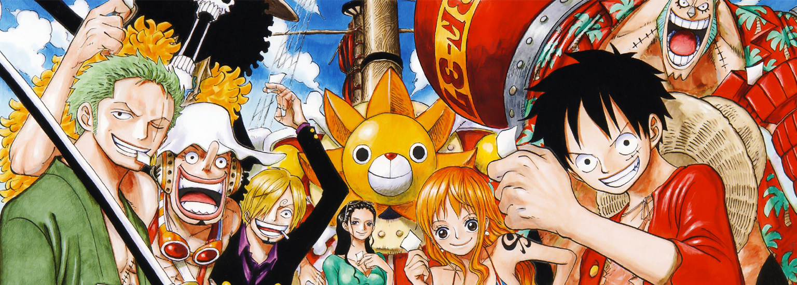

L'Arc Romance Dawn, parfois appelé Arc du Colonel Morgan est le premier arc de la Saga East Blue du manga et de l'anime One Piece. Cet arc est composé de trois histoires. La première montre comment Monkey D. Luffy a reçu ses pouvoirs et son chapeau de paille et montre sa détermination à vouloir devenir pirate. La seconde histoire est sa rencontre avec un garçon nommé Koby qu'il aide à s'échapper d'une femme pirate nommée Lady Alvida. Dans la dernière histoire, Luffy essaie de recruter Roronoa Zoro dans son équipage tout en affrontant le Colonel Morgan.
Épisodes : 1-4, 4 épisodes Tomes : 1, 1 volume.

Après que Luffy ait été "kidnappé" par un oiseau, Zoro rencontre trois pirates de l'équipage de Baggy le Clown qui disent s'être fait voler leur bateau par une fille. Pendant ce temps, Luffy arrive dans un village désert pris d'assaut par Baggy le Clown. Après un long combat contre Baggy et ses hommes, Luffy arrive à convaincre Nami, une excellente navigatrice ainsi qu'une voleuse de pirates (celle qui a volé le bateau des trois hommes), de rejoindre leur équipage.
Épisodes : 4-8, 5 épisodes Tomes : 1-3, 3 tomes.

Après avoir volé le Vogue Merry, le bateau de L'Équipage du Chapeau de Paille, Nami rejoint Arlong, un Pirate Homme-Poisson très robuste et convaincu que sa race est supérieure à celle des Humains. Elle détrousse en effet les pirates pour son compte, car il retient en otage les habitants de son village. Luffy, apprenant que sa Navigatrice est sous la menace d'Arlong, décide de l'affronter. Ainsi, après un long combat, il vainc le pirate et Nami regagne son équipage.
Épisodes : 31-44, 14 episodes Tomes : 8-11, 4 tomes.

L'Équipage du Chapeau de Paille et Nefertari Vivi arrivent finalement au royaume désertique d'Alabasta, avec l'intention de démanteler Baroque Works et de détruire les ambitions de Crocodile. Dès la première ville, Luffy tombe sur le Colonel Smoker qui avait anticipé ses mouvements, mais se sort facilement de ce mauvais pas grâce à son frère, Portgas D. Ace, qu'il rencontre aussi par hasard. Tandis que Crocodile met un point final à ses plans pour s'emparer du royaume, nos héros constatent l'ampleur du malaise qui s'y répand : sécheresse, rébellion et menace de guerre civile. Ils décident alors de se rendre directement au repaire du Grand Corsaire, Rainbase, pour l'affronter, mais ils se font prendre au piège (avec Smoker), puis Luffy est laissé pour mort par Crocodile après un duel à sens unique, ne pouvant rien faire contre les pouvoirs Logia de son adversaire. Ce combat lui permettra cependant de comprendre le point faible du corsaire. Les événements déclenchés par toutes ces péripéties semblent devoir se conclure en un seul endroit : la capitale du royaume, où convergent l'armée rebelle, les agents de Baroque Works et l'équipage de Luffy. S'y engage une bataille sanglante et épique entre les rebelles et l'armée régulière d'une part, Baroque Works et nos héros d'autre part, qui mène à la défaite de Crocodile et de ses plans. Luffy y gagne aussi un nouveau membre d'équipage, Nico Robin, qui était pourtant une alliée du corsaire sous le nom de Miss All Sunday, ainsi qu'une prime de cent millions de berrys.
Épisodes : 92-130, 39 épisodes Tomes : 17-24, 8 tomes.

Grâce au geyser et à Montblanc Cricket, Luffy et son équipage parviennent sur la Mer Blanche et aux îles célestes de Skypiea. Ils y feront la connaissance de deux habitants des lieux, Conis et Pagaya, qui les initieront aux coutumes et objets locaux, comme les « dials », sortes de coquillage aux propriétés diverses ou les waver qui permettent de naviguer sur la mer de nuage. Cependant, une altercation avec la milice locale leur fait comprendre que tout n'est pas rose dans ce monde : les habitants sont en effet gouverné d'un main de fer par une personne qui se fait appeler « dieu » – ce dernier possédant certains pouvoirs surnaturels comme le mantra. Autre problème : un peuple belliqueux nommé Shandia dont la terre (Upper Yard) a été volée par les habitants du ciel – le leader, Wiper, rêvant d'ailleurs de la récupérer par la force. Dans ce contexte, Luffy et ses amis décident d'aller affronter ce dieu, qui se nomme en fait Ener, occasionnant de nombreux combats entre tous les protagonistes. Finalement, Luffy parviendra à battre Ener grâce à un avantage certain : son corps de caoutchouc est totalement insensible à la foudre de son adversaire. Le passage dans ces îles apportera aussi l'explication sur la mystérieuse cité d'or et la légende de Norland, évoquées par Montblanc Cricket dans l'arc Jaya.
Épisodes : 153-195, 43 épisodes Tomes : 26-32, 7 tomes.

Après avoir quitté Longring Longland, l'équipage de Luffy tombera sur une gare en pleine mer ; la chef de gare (Kokoro) leur explique alors que le Puffing Tom, un train capable de rouler sur des rails flottants, relie plusieurs îles des environs. Suite à cette escale, l'équipage arrive finalement à Water Seven avec la ferme intention de réparer le Vogue Merry grâce aux 300 millions de berrys gagnés à Skypiea. Mais tout ne se passe pas comme prévu : les meilleurs artisans du monde, la Galère Corporation, découvrent que le bateau est trop endommagé pour être retapé, une partie de l'argent est volé par la Franky Family (un groupe de brigands) et Robin disparaît mystérieusement. De son côté, Pipo ne supporte pas l'idée de changer de navire et quitte l'équipage. Mais en dehors de cela, la ville elle-même est secouée par la tentative d'assassinat du maire Iceburg. Après tous ces ennuis, Luffy finit par découvrir l'existence du CP9, une unité secrète au service du gouvernement mondial, et leur véritable mission en voulant retrouver la trace de Robin. Las, il échoue à tirer cette dernière de leurs griffes et les agents du CP9 quittent Water Seven à bord du Puffing Tom, direction Enies Lobby et la porte de la justice. Alors, avec l'aide de la chef de gare Kokoro, de la Galère Corporation et de Franky, tout l'équipage du chapeau de paille se lance à leur poursuite à bord d'un prototype de train aquatique.
Épisodes : 229-263, 35 épisodes Tomes : 34-39, 6 tomes.

Cet arc se déroule sur une des trois îles du gouvernement mondial servant d'avant-garde à la Porte de la justice. Dix milles hommes de la marine y séjournent et c'est aussi ici que se trouve le QG du CP9. L'équipage de Luffy, la Franky Family et les artisans de la Galère Corporation y arrivent à l'aide du RocketMan, premier train construit par Tom mais non utilisé jusque-là car dépourvu de frein, afin de libérer Nico Robin qui a été arrêtée par Spandam, le directeur du CP9. On apprend que celui-ci la fait chanter en menaçant de déclencher un « Buster Call », c'est-à-dire une attaque combinée et destructrice de six vice-amiraux, sur Luffy et ses amis si elle ne coopérait pas. Il en faut cependant pour arrêter Luffy et, après avoir symboliquement déclaré la guerre au gouvernement mondial, un long combat s'ouvre entre son équipage et le CP9 d'une part, ses amis et tous les soldats de la Marine présents sur place de l'autre. Entre temps, Spandam déclenche finalement le Buster Call par erreur, ce qui aboutit à la quasi-dévastation de l'île d'Enies Lobby. Suite au combat, l'équipage du chapeau de paille, victorieux, réussit à prendre la fuite et, de retour à Water Seven, ils reçoivent une visite surprise : Monkey D. Garp, le grand-père de Luffy et vice-amiral de la Marine. De son côté, Franky leur construit un nouveau navire pour remplacer le Vogue Merry : le Thousand Sunny, capable de naviguer jusqu'au bout du monde. Franky rejoindra d'ailleurs par la même occasion l'équipage en tant que charpentier.
Épisodes : 264-290, 293-302 et 304-312, 46 episodes Tomes : 39-44, 6 tomes.

Luffy et ses amis continuent leur aventure en direction de l'île des Hommes-Poissons, sans savoir comment y parvenir. Heureusement en chemin, ils rencontrent Camie et Octo qui leur expliquent qu'un revêtement spécial pour le bateau est nécessaire pour leur voyage. Ils guident donc l'équipage du Chapeau de Paille vers l'Archipel Sabaody pour que les pirates rencontrent un artisan naval. L'archipel est en fait célèbre pour une Salle de ventes aux enchères. Malheureusement, des pirates de renom se trouvent également sur l'Archipel. Ils sont appelés les « Onze Supernovae » et sont également en quête du Nouveau Monde. En cherchant un artisan, Luffy fait la rencontre de Silvers Rayleigh, jadis le second de Gol D. Roger, mais la pagaille qu'il provoque lors d'une vente d'esclaves provoque l'arrivée sur l'île de l'Amiral Kizaru et du capitaine corsaire Bartholomew Kuma. Le combat tourne rapidement au désavantage des pirates présents et Kuma, grâce au pouvoir de son Fruit du Démon, sépare et envoie chaque membre de l'équipage dans un coin reculé du monde.
Épisodes : 385-405, 21 épisodes Tomes : 50-53, 4 tomes.

Accompagné de Boa Hancock, Luffy se rend à Impel Down afin de sauver son frère Ace retenu prisonnier là-bas. Impel Down est la prison sous-marine du Gouvernement Mondial. Impel down est une prison composée officiellement de 5 étages et officieusement de 6 : l'enfer pourpre (étage 1), l'enfer des bêtes (étage 2), l'enfer de la faim (étage 3), l'enfer ardent (étage 4), l'enfer des glaces (étage 5) et l'enfer éternel (étage 6). À chaque étage, on retrouve différentes classes de hors-la-loi, plus l'étage est élevé, plus les criminels sont dangereux. Quant au niveau 6, c'est le lieu où résident les criminels ayant bouleversé le monde, tel que Crocodile l'ancien Capitaine Corsaire.
Épisodes : 422-425 et 430-452, 27 épisodes Tomes : 54-56, 3 tomes.

Épisodes : 457-489, 32 épisode Tomes : 56-59, 4 tomes.

Deux ans plus tard, l'équipage se retrouve petit à petit sur l'archipel Shabondy. Chacun a amélioré ses techniques de combat, ce qui leur est utile rapidement car au même moment, des pirates « sosies » ont usurpé l'identité de l'équipage du Chapeau de paille et tenté de recruter parmi les pirates les plus dangereux. Luffy et son équipage se font donc repérer par la Marine quand ils rétablissent la vérité alors que la Marine tente d'arrêter les « sosies ». C'est alors que le chef de la division scientifique fait son apparition, Sentomaru. En voyant la supercherie, Sentomaru vainc ce dernier très facilement, avant que Luffy, Zoro et Sanjy ne parviennent à détruire des Pacifistas sur leur chemin. L'équipage se réunit sur le bateau, et prend la direction de l'île des hommes-poissons, en plongeant dans la mer avec le Thousand Sunny alors enrobé d'une grande bulle. Luffy a appri a maitriser le HAKI DES ROIS ( il peut assomer des gens a distance ).
Épisodes : 517-522, 5 épisodes Tomes : 61, 1 tome.

L'Arc Dressrosa est le vingt-septième arc dans la série et le second de la Saga Alliance Pirate de One Piece, suivant l'Arc Punk Hazard. Les Chapeaux de Paille, Trafalgar Law, Kinemon et Momonosuke, ayant formé une alliance, voyagent jusqu'à Dressrosa pour mettre en oeuvre leurs plans. Dressrosa est la seconde île que Les Chapeaux de Paille découvrent dans le Nouveau Monde, et est gouvernée par le Grand Corsaire, Don Quichotte Doflamingo.
Épisodes : 629-746, 118 épisodes Tomes : 70-80, 11 tomes.

L'Arc Whole Cake Island est le vingt-neuvième arc dans la série et le deuxième de la Saga Quatre Empereurs de One Piece, suivant l'Arc Zo. L'alliance des Ninjas/Samourai/Minks/Pirates se sépare en quatre groupes et le groupe composé de Luffy, Nami, Chopper, Brook, Pekoms et Pedro part pour Whole Cake Island. Ils doivent récupérer Sanji, qui est censé épouser Charlotte Pudding afin de sceller une alliance entre le Germa 66 et l'Équipage de Big Mom. Ils seront rejoints par Carrot, mais seront séparés de Pekoms une fois sur les territoires ennemis.
Épisodes : 783 - 877, 95 épisodes Tomes : 82 - 90, 9 tomes.

L'arc Pays des Wa est le trente et unième Arc de la série et le quatrième Arc de la Saga Quatre Empereurs de One Piece, l'arc suivant celui de la Rêverie. L'Alliance Ninja-Pirate-Mink-Samouraï met son plan en marche pour recruter les Pirates de Barbe Blanche et libérer le Pays des Wa du contrôle de Kaido et de son shogun.
Épisodes : 890 - 894 et 897 - ... , ... épisodes Tomes : 90 - ..., ...tomes.